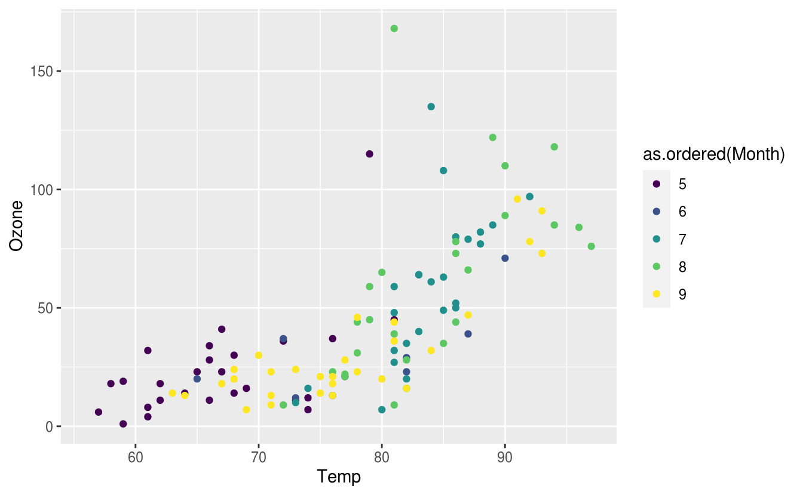
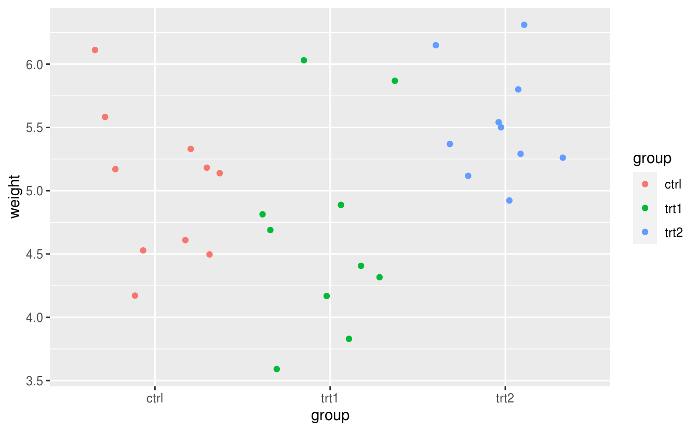
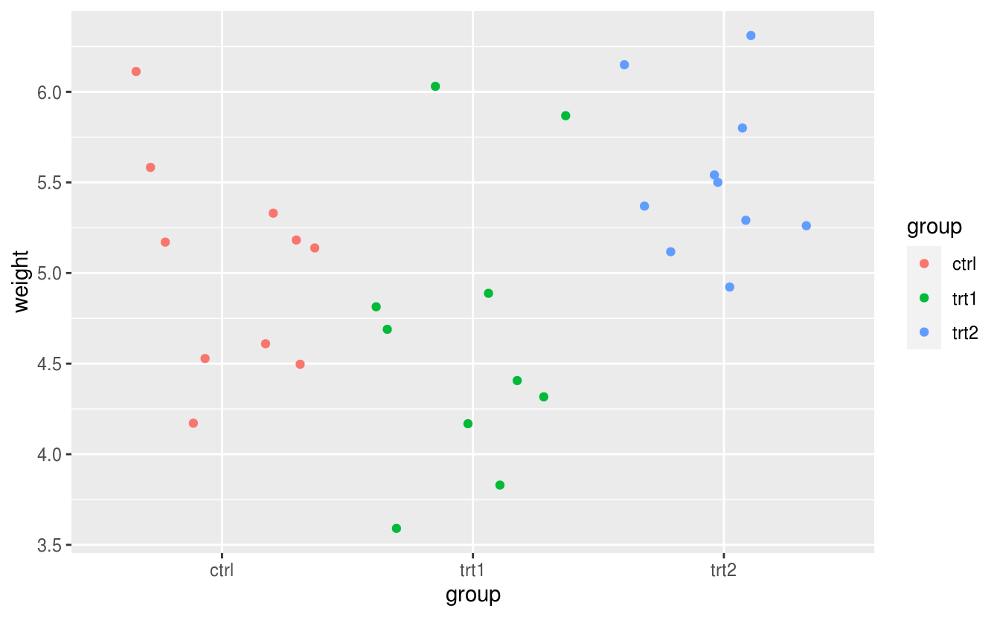
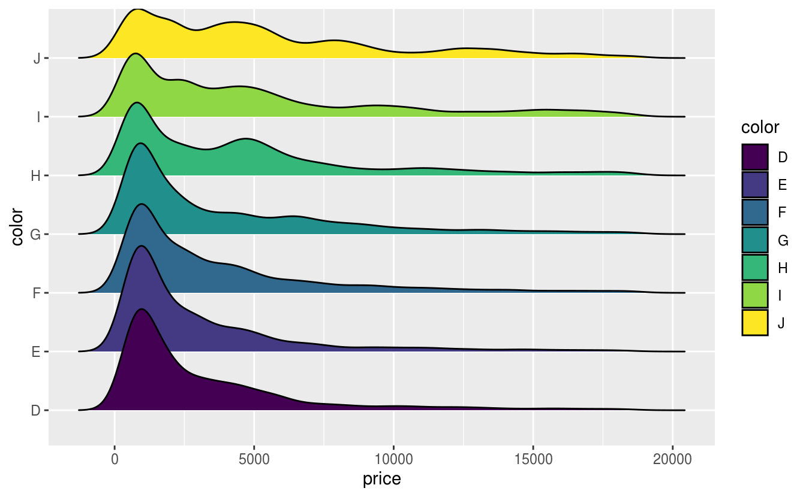
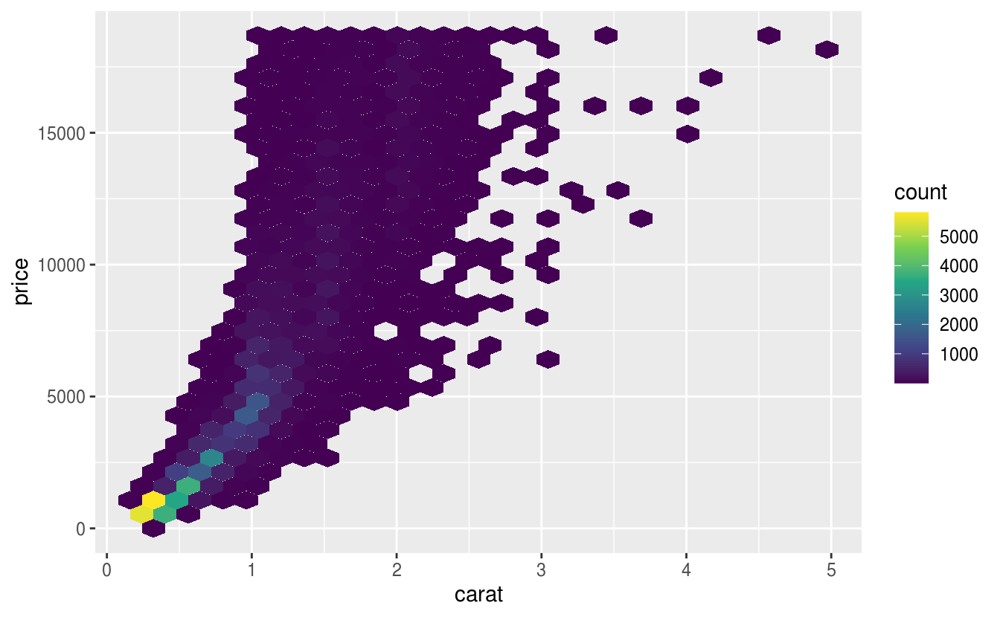

第 12 章 数据可视化
3-D bar plots are an abomination. Just because Excel can do them doesn’t mean you should. (Dismount pulpit).
— Berton Gunter39
grid graphics lattice 和 ggplot2 之间的历史发展关系脉络
gganimate 只是一个扩展，并不是新的东西，因为它是静态图形转化为帧，然后借助第三方工具合成
ggplot2 生态系统 12.1
| Package | Title |
|---|---|
| gg.gap | Define Segments in y-Axis for ggplot2 |
| ggallin | Grab Bag of ggplot2 Functions |
| ggalluvial | Alluvial Plots in ggplot2 |
| ggalt | Extra Coordinate Systems, Geoms, Statistical Transformations, Scales and Fonts for ggplot2 |
| ggamma | Generalized Gamma Probability Distribution |
| gganimate | A Grammar of Animated Graphics |
| ggasym | Asymmetric Matrix Plotting in ggplot2 |
| ggbeeswarm | Categorical Scatter (Violin Point) Plots |
| ggBubbles | Mini Bubble Plots for Comparison of Discrete Data with ggplot2 |
| ggbuildr | Save Incremental Builds of Plots |
| ggChernoff | Chernoff Faces for ggplot2 |
| ggconf | Simpler Appearance Modification of ggplot2 |
| ggcorrplot | Visualization of a Correlation Matrix using ggplot2 |
| ggdag | Analyze and Create Elegant Directed Acyclic Graphs |
| ggdark | Dark Mode for ggplot2 Themes |
| ggdemetra | ggplot2 Extension for Seasonal and Trading Day Adjustment with RJDemetra |
| ggdendro | Create Dendrograms and Tree Diagrams Using ggplot2 |
| ggdistribute | A ggplot2 Extension for Plotting Unimodal Distributions |
| ggdmc | Cognitive Models |
| gge | Genotype Plus Genotype-by-Environment Biplots |
| ggeasy | Easy Access to ggplot2 Commands |
| ggedit | Interactive ggplot2 Layer and Theme Aesthetic Editor |
| ggeffects | Create Tidy Data Frames of Marginal Effects for ggplot from Model Outputs |
| ggenealogy | Visualization Tools for Genealogical Data |
| ggetho | Visualisation of High-Throughput Behavioural (i.e. Ethomics) Data |
| ggExtra | Add Marginal Histograms to ggplot2, and More ggplot2 Enhancements |
| ggfan | Summarise a Distribution Through Coloured Intervals |
| ggfittext | Fit Text Inside a Box in ggplot2 |
| ggfocus | Scales that Focus Specific Levels in your ggplot() |
| ggforce | Accelerating ggplot2 |
| ggformula | Formula Interface to the Grammar of Graphics |
| ggfortify | Data Visualization Tools for Statistical Analysis Results |
| gggenes | Draw Gene Arrow Maps in ggplot2 |
| ggghost | Capture the Spirit of Your ggplot2 Calls |
| gggibbous | Moon Charts, a Pie Chart Alternative |
| ggguitar | Utilities for Creating Guitar Tablature |
| gghalfnorm | Create a Half Normal Plot Using ggplot2 |
| gghalves | Compose Half-Half Plots Using Your Favourite Geoms |
| gghighlight | Highlight Lines and Points in ggplot2 |
| ggimage | Use Image in ggplot2 |
| gginference | Visualise the Results of Inferential Statistics using ggplot2 |
| gginnards | Explore the Innards of ggplot2 Objects |
| ggiraph | Make ggplot2 Graphics Interactive |
| ggiraphExtra | Make Interactive ggplot2. Extension to ggplot2 and ggiraph |
| ggjoy | Joyplots in ggplot2 |
| gglasso | Group Lasso Penalized Learning Using a Unified BMD Algorithm |
| gglogo | Geom for Logo Sequence Plots |
| ggloop | Create ggplot2 Plots in a Loop |
| gglorenz | Plotting Lorenz Curve with the Blessing of ggplot2 |
| ggm | Graphical Markov Models with Mixed Graphs |
| ggmap | Spatial Visualization with ggplot2 |
| ggmcmc | Tools for Analyzing MCMC Simulations from Bayesian Inference |
| ggmosaic | Mosaic Plots in the ggplot2 Framework |
| ggmr | Generalized Gauss Markov Regression |
| ggmsa | Plot Multiple Sequence Alignment using ggplot2 |
| ggmuller | Create Muller Plots of Evolutionary Dynamics |
| ggnetwork | Geometries to Plot Networks with ggplot2 |
| ggnewscale | Multiple Fill and Colour Scales in ggplot2 |
| ggnormalviolin | A ggplot2 Extension to Make Normal Violin Plots |
| ggpage | Creates Page Layout Visualizations |
| ggparallel | Variations of Parallel Coordinate Plots for Categorical Data |
| ggparliament | Parliament Plots |
| ggparty | ggplot Visualizations for the partykit Package |
| ggperiodic | Easy Plotting of Periodic Data with ggplot2 |
| ggplot.multistats | Multiple Summary Statistics for Binned Stats/Geometries |
| ggplot2 | Create Elegant Data Visualisations Using the Grammar of Graphics |
| ggplot2movies | Movies Data |
| ggplotAssist | RStudio Addin for Teaching and Learning ggplot2 |
| ggplotgui | Create Ggplots via a Graphical User Interface |
| ggplotify | Convert Plot to grob or ggplot Object |
| ggplotlyExtra | Extra Convenience Functions for Plotly |
| ggpmisc | Miscellaneous Extensions to ggplot2 |
| ggPMX | ggplot2 Based Tool to Facilitate Diagnostic Plots for NLME Models |
| ggpointdensity | A Cross Between a 2D Density Plot and a Scatter Plot |
| ggpol | Visualizing Social Science Data with ggplot2 |
| ggpolypath | Polygons with Holes for the Grammar of Graphics |
| ggpubr | ggplot2 Based Publication Ready Plots |
| ggpval | Annotate Statistical Tests for ggplot2 |
| ggQC | Quality Control Charts for ggplot |
| ggQQunif | Compare Big Datasets to the Uniform Distribution |
| ggquickeda | Quickly Explore Your Data Using ggplot2 and table1 Summary Tables |
| ggquiver | Quiver Plots for ggplot2 |
| ggRandomForests | Visually Exploring Random Forests |
| ggraph | An Implementation of Grammar of Graphics for Graphs and Networks |
| ggraptR | Allows Interactive Visualization of Data Through a Web Browser GUI |
| ggrasp | Gaussian-Based Genome Representative Selector with Prioritization |
| ggrepel | Automatically Position Non-Overlapping Text Labels with ggplot2 |
| ggResidpanel | Panels and Interactive Versions of Diagnostic Plots using ggplot2 |
| ggridges | Ridgeline Plots in ggplot2 |
| ggrisk | Risk Score Plot for Cox Regression |
| ggROC | package for roc curve plot with ggplot2 |
| ggroups | Pedigree and Genetic Groups |
| ggsci | Scientific Journal and Sci-Fi Themed Color Palettes for ggplot2 |
| ggseas | stats for Seasonal Adjustment on the Fly with ggplot2 |
| ggseqlogo | A ggplot2 Extension for Drawing Publication-Ready Sequence Logos |
| ggsignif | Significance Brackets for ggplot2 |
| ggsn | North Symbols and Scale Bars for Maps Created with ggplot2 or ggmap |
| ggsoccer | Plot Soccer Event Data |
| ggsolvencyii | A ggplot2-Plot of Composition of Solvency II SCR: SF and IM |
| ggsom | New Data Visualisations for SOMs Networks |
| ggspatial | Spatial Data Framework for ggplot2 |
| ggspectra | Extensions to ggplot2 for Radiation Spectra |
| ggstance | Horizontal ggplot2 Components |
| ggstatsplot | ggplot2 Based Plots with Statistical Details |
| ggswissmaps | Offers Various Swiss Maps as Data Frames and ggplot2 Objects |
| ggtern | An Extension to ggplot2, for the Creation of Ternary Diagrams |
| ggThemeAssist | Add-in to Customize ggplot2 Themes |
| ggthemes | Extra Themes, Scales and Geoms for ggplot2 |
| ggTimeSeries | Time Series Visualisations Using the Grammar of Graphics |
| ggupset | Combination Matrix Axis for ggplot2 to Create UpSet Plots |
| ggVennDiagram | A ggplot2 Implement of Venn Diagram |
| ggversa | Graficas Versatiles Con ggplot2 |
| ggvis | Interactive Grammar of Graphics |
| ggvoronoi | Voronoi Diagrams and Heatmaps with ggplot2 |
| ggwordcloud | A Word Cloud Geom for ggplot2 |
David Robinson 给出为何使用 ggplot240 当然也有 Jeff Leek 指出在某些重要场合不适合 ggplot241 并且给出强有力的 证据，其实不管怎么样，适合自己的才是好的。也不枉费 Garrick Aden-Buie 花费 160 页幻灯片逐步分解介绍 优雅的ggplot2，Malcolm Barrett 也介绍了 ggplot2 基础用法，还有 Selva Prabhakaran 精心总结给出了 50 个 ggplot2 数据可视化的 例子 以及 Victor Perrier 为小白用 ggplot2 操碎了心地开发 RStudio 插件 esquisse 包，Claus O. Wilke 教你一步步创建出版级的图形 https://github.com/clauswilke/practical_ggplot2。
GGplot2 是十分方便的统计作图工具，相比 Base R，为了一张出版级的图形，不需要去调整每个参数，实现快速出图。集成了很多其它统计计算的 R 包，支持丰富的统计分析和计算功能，如回归、平滑等，实现了作图和模型的无缝连接。比如图12.1，使用 loess 局部多项式平滑得到数据的趋势，不仅仅是散点图，代码量也非常少。
ggplot(mpg, aes(displ, hwy)) +
geom_point(aes(color = class)) +
geom_smooth(se = TRUE, method = "loess") +
labs(
title = "Fuel efficiency generally decreases with engine size",
subtitle = "Two seaters (sports cars) are an exception because of their light weight",
caption = "Data from fueleconomy.gov"
)
#> `geom_smooth()` using formula 'y ~ x'
图 12.1: 简洁美观
故事源于一幅图片，我不记得第一次见到这幅图是什么时候了，只因多次在多个场合中见过，所以留下了深刻的印象，后来才知道它出自于一篇博文 — Using R packages and education to scale Data Science at Airbnb，作者 Ricardo Bion 还在其 Github 上传了相关代码42。除此之外还有几篇重要的参考资料：
- Pablo Barberá 的 Data Visualization with R and ggplot2
- Kieran Healy 的新书 Data Visualization: A Practical Introduction
- Matt Leonawicz 的新作 mapmate, 可以去其主页欣赏系列作品43
- tidytuesday 可视化挑战官方项目 还有 tidytuesday
- ggstatsplot 可视化统计检验、模型的结果
- ggpubr 制作出版级统计图形
12.1 基础语法
以数据集 airquality 为例介绍GGplot2 图层、主题、配色、坐标、尺度、注释和组合等
12.1.1 图层
ls("package:ggplot2", pattern = "^geom_")
#> [1] "geom_abline" "geom_area" "geom_bar"
#> [4] "geom_bin2d" "geom_blank" "geom_boxplot"
#> [7] "geom_col" "geom_contour" "geom_contour_filled"
#> [10] "geom_count" "geom_crossbar" "geom_curve"
#> [13] "geom_density" "geom_density_2d" "geom_density2d"
#> [16] "geom_dotplot" "geom_errorbar" "geom_errorbarh"
#> [19] "geom_freqpoly" "geom_hex" "geom_histogram"
#> [22] "geom_hline" "geom_jitter" "geom_label"
#> [25] "geom_line" "geom_linerange" "geom_map"
#> [28] "geom_path" "geom_point" "geom_pointrange"
#> [31] "geom_polygon" "geom_qq" "geom_qq_line"
#> [34] "geom_quantile" "geom_raster" "geom_rect"
#> [37] "geom_ribbon" "geom_rug" "geom_segment"
#> [40] "geom_sf" "geom_sf_label" "geom_sf_text"
#> [43] "geom_smooth" "geom_spoke" "geom_step"
#> [46] "geom_text" "geom_tile" "geom_violin"
#> [49] "geom_vline"生成一个散点图
12.1.2 主题
ls("package:ggplot2", pattern = "^theme_")
#> [1] "theme_bw" "theme_classic" "theme_dark" "theme_get"
#> [5] "theme_gray" "theme_grey" "theme_light" "theme_linedraw"
#> [9] "theme_minimal" "theme_replace" "theme_set" "theme_test"
#> [13] "theme_update" "theme_void"这里只展示 theme_bw() theme_void() theme_minimal() 和 theme_void() 等四个常见主题，更多主题参考 ggsci、ggthemes 、ggtech、hrbrthemes 和 ggthemr 包
ggplot(airquality, aes(x = Temp, y = Ozone)) + geom_point() + theme_bw()
#> Warning: Removed 37 rows containing missing values (geom_point).
ggplot(airquality, aes(x = Temp, y = Ozone)) + geom_point() + theme_void()
#> Warning: Removed 37 rows containing missing values (geom_point).
ggplot(airquality, aes(x = Temp, y = Ozone)) + geom_point() + theme_minimal()
#> Warning: Removed 37 rows containing missing values (geom_point).
ggplot(airquality, aes(x = Temp, y = Ozone)) + geom_point() + theme_void()
#> Warning: Removed 37 rows containing missing values (geom_point).
12.1.3 配色
ls("package:ggplot2", pattern = "^scale_(color|fill)_")
#> [1] "scale_color_binned" "scale_color_brewer" "scale_color_continuous"
#> [4] "scale_color_date" "scale_color_datetime" "scale_color_discrete"
#> [7] "scale_color_distiller" "scale_color_fermenter" "scale_color_gradient"
#> [10] "scale_color_gradient2" "scale_color_gradientn" "scale_color_grey"
#> [13] "scale_color_hue" "scale_color_identity" "scale_color_manual"
#> [16] "scale_color_ordinal" "scale_color_steps" "scale_color_steps2"
#> [19] "scale_color_stepsn" "scale_color_viridis_c" "scale_color_viridis_d"
#> [22] "scale_fill_binned" "scale_fill_brewer" "scale_fill_continuous"
#> [25] "scale_fill_date" "scale_fill_datetime" "scale_fill_discrete"
#> [28] "scale_fill_distiller" "scale_fill_fermenter" "scale_fill_gradient"
#> [31] "scale_fill_gradient2" "scale_fill_gradientn" "scale_fill_grey"
#> [34] "scale_fill_hue" "scale_fill_identity" "scale_fill_manual"
#> [37] "scale_fill_ordinal" "scale_fill_steps" "scale_fill_steps2"
#> [40] "scale_fill_stepsn" "scale_fill_viridis_b" "scale_fill_viridis_c"
#> [43] "scale_fill_viridis_d"ggplot(airquality, aes(x = Temp, y = Ozone, color = as.factor(Month))) +
geom_point(na.rm = TRUE)
ggplot(airquality, aes(x = Temp, y = Ozone, color = as.ordered(Month))) +
geom_point(na.rm = TRUE)
12.1.4 刻度
ls("package:ggplot2", pattern = "^scale_(x|y)_")
#> [1] "scale_x_binned" "scale_x_continuous" "scale_x_date"
#> [4] "scale_x_datetime" "scale_x_discrete" "scale_x_log10"
#> [7] "scale_x_reverse" "scale_x_sqrt" "scale_x_time"
#> [10] "scale_y_binned" "scale_y_continuous" "scale_y_date"
#> [13] "scale_y_datetime" "scale_y_discrete" "scale_y_log10"
#> [16] "scale_y_reverse" "scale_y_sqrt" "scale_y_time"12.1.5 注释
ls("package:ggplot2", pattern = "^annotation_")
#> [1] "annotation_custom" "annotation_logticks" "annotation_map"
#> [4] "annotation_raster"
ggplot(airquality, aes(x = Temp, y = Ozone)) +
geom_point(na.rm = TRUE) +
labs(title = substitute(paste(d *
bolditalic(x)[italic(t)] == alpha * (theta - bolditalic(x)[italic(t)]) *
d * italic(t) + lambda * d * italic(B)[italic(t)]), list(lambda = 4)))
12.1.6 图例
二维的图例 biscale 和 multiscales 和 ggnewscale
12.1.7 组合
ggplot(airquality) +
geom_point(aes(x = Temp, y = Ozone), na.rm = TRUE) +
facet_wrap(~ as.ordered(Month))
ggplot(airquality) +
geom_point(aes(x = Temp, y = Ozone), na.rm = TRUE) +
facet_wrap(~ as.ordered(Month), nrow = 1)
cowplot 是以作者 Claus O. Wilke 命名的，用来组合 ggplot 对象画图，类似的组合图形的功能包还有 baptiste auguié 开发的 gridExtra 和 egg， Thomas Lin Pedersen 开发的 patchwork
Dean Attali 开发的 ggExtra 可以在图的边界添加密度估计曲线，直方图等
12.1.8 坐标系
极坐标，直角坐标
12.1.9 坐标轴
坐标轴标签位置、大小、字体
12.2 统计图形
12.2.1 散点图
下面以 diamonds 数据集为例展示 ggplot2 的绘图过程，首先加载 diamonds 数据集，查看数据集的内容
data(diamonds)
str(diamonds)
#> Classes 'tbl_df', 'tbl' and 'data.frame': 53940 obs. of 10 variables:
#> $ carat : num 0.23 0.21 0.23 0.29 0.31 0.24 0.24 0.26 0.22 0.23 ...
#> $ cut : Ord.factor w/ 5 levels "Fair"<"Good"<..: 5 4 2 4 2 3 3 3 1 3 ...
#> $ color : Ord.factor w/ 7 levels "D"<"E"<"F"<"G"<..: 2 2 2 6 7 7 6 5 2 5 ...
#> $ clarity: Ord.factor w/ 8 levels "I1"<"SI2"<"SI1"<..: 2 3 5 4 2 6 7 3 4 5 ...
#> $ depth : num 61.5 59.8 56.9 62.4 63.3 62.8 62.3 61.9 65.1 59.4 ...
#> $ table : num 55 61 65 58 58 57 57 55 61 61 ...
#> $ price : int 326 326 327 334 335 336 336 337 337 338 ...
#> $ x : num 3.95 3.89 4.05 4.2 4.34 3.94 3.95 4.07 3.87 4 ...
#> $ y : num 3.98 3.84 4.07 4.23 4.35 3.96 3.98 4.11 3.78 4.05 ...
#> $ z : num 2.43 2.31 2.31 2.63 2.75 2.48 2.47 2.53 2.49 2.39 ...数值型变量 carat 作为 x 轴
ggplot(diamonds, aes(x = carat))
ggplot(diamonds, aes(x = carat, y = price))
ggplot(diamonds, aes(x = carat, color = cut))
ggplot(diamonds, aes(x = carat), color = "steelblue")


图 12.2: 绘图过程
图 12.2 的基础上添加数据图层
sub_diamonds <- diamonds[sample(1:nrow(diamonds), 1000), ]
ggplot(sub_diamonds, aes(x = carat, y = price)) +
geom_point()
图 12.3: 添加数据图层
给散点图12.3上色

图 12.4: 散点图配色
ggplot(sub_diamonds, aes(x = carat, y = price)) +
geom_point(color = "steelblue") +
scale_y_continuous(
labels = scales::unit_format(unit = "k", scale = 1e-3),
breaks = seq(0, 20000, 4000)
)图 12.5: 格式化坐标轴刻度标签
让另一变量 cut 作为颜色分类指标

图 12.6: 分类散点图
当然还有一种类似的表示就是分组，默认情况下，ggplot2将所有观测点视为一组，以分类变量 cut 来分组

图 12.7: 分组
在图12.7 上没有体现出来分组的意思，下面以 cut 分组线性回归为例
ggplot(sub_diamonds, aes(x = carat, y = price)) +
geom_point() +
geom_smooth(method = "lm")
#> `geom_smooth()` using formula 'y ~ x'
ggplot(sub_diamonds, aes(x = carat, y = price, group = cut)) +
geom_point() +
geom_smooth(method = "lm")
#> `geom_smooth()` using formula 'y ~ x'图 12.8: 分组线性回归
我们当然可以选择更加合适的拟合方式，如局部多项式平滑 loess 但是该方法不太适用观测值比较多的情况，因为它会占用比较多的内存，建议使用广义可加模型作平滑拟合
ggplot(sub_diamonds, aes(x = carat, y = price, group = cut)) +
geom_point() +
geom_smooth(method = "loess")
#> `geom_smooth()` using formula 'y ~ x'图 12.9: 局部多项式平滑
ggplot(sub_diamonds, aes(x = carat, y = price, group = cut)) +
geom_point() +
geom_smooth(method = "gam", formula = y ~ s(x, bs = "cs"))
图 12.10: 数据分组应用广义可加平滑
为了更好地区分开组别，我们在图12.10的基础上分面或者配色
ggplot(sub_diamonds, aes(x = carat, y = price, group = cut)) +
geom_point() +
geom_smooth(method = "gam", formula = y ~ s(x, bs = "cs")) +
facet_grid(~cut)
ggplot(sub_diamonds, aes(x = carat, y = price, group = cut, color = cut)) +
geom_point() +
geom_smooth(method = "gam", formula = y ~ s(x, bs = "cs"))
图 12.11: 分组配色
在分类散点图的另一种表示方法就是分面图，以 cut 变量作为分面的依据

图 12.12: 分面散点图
给图 12.12 上色
ggplot(sub_diamonds, aes(x = carat, y = price)) +
geom_point(color = "steelblue") +
facet_grid(~cut)图 12.13: 给分面散点图上色
在图12.13的基础上，给不同的类上不同的颜色

图 12.14: 给不同的类上不同的颜色
去掉图例，此时图例属于冗余信息了
ggplot(sub_diamonds, aes(x = carat, y = price, color = cut)) +
geom_point(show.legend = FALSE) +
facet_grid(~cut)图 12.15: 去掉图例
四块土地，所施肥料不同，肥力大小顺序 4 < 2 < 3 < 1 小麦产量随肥力的变化
data(Wheat2, package = "nlme") # Wheat Yield Trials
library(colorspace)
ggplot(Wheat2, aes(longitude, latitude)) +
geom_point(aes(size = yield, colour = Block)) +
scale_color_discrete_sequential(palette = "Viridis") +
scale_x_continuous(breaks = seq(0, 30, 5)) +
scale_y_continuous(breaks = seq(0, 50, 10))
图 12.16: 多个图例

图 12.17: 分类散点图
图层、分组、分面和散点图介绍完了，接下来就是其它统计图形，如箱线图，小提琴图和条形图
dat <- as.data.frame(cbind(rep(1948 + seq(12), each = 12), rep(seq(12), 12), AirPassengers))
colnames(dat) <- c("year", "month", "passengers")
ggplot(data = dat, aes(x = as.factor(year), y = as.factor(month))) +
stat_sum(aes(size = passengers), colour = "lightblue") +
scale_size(range = c(1, 10), breaks = seq(100, 650, 50)) +
labs(x = "Year", y = "Month", colour = "Passengers") +
theme_minimal()图 11.14: 1948年至1960年航班乘客人数变化
12.2.2 箱线图
以 PlantGrowth 数据集为例展示箱线图，在两组不同实验条件下，植物生长的情况，纵坐标是干燥植物的量，横坐标表示不同的实验条件。这是非常典型的适合用箱线图来表达数据的场合，Y 轴对应数值型变量，X 轴对应分类变量，在 R 语言中，分类变量的类型是 factor
data("PlantGrowth")
str(PlantGrowth)
#> 'data.frame': 30 obs. of 2 variables:
#> $ weight: num 4.17 5.58 5.18 6.11 4.5 4.61 5.17 4.53 5.33 5.14 ...
#> $ group : Factor w/ 3 levels "ctrl","trt1",..: 1 1 1 1 1 1 1 1 1 1 ...
PlantGrowth 数据量比较小，此时比较适合采用抖动散点图，抖动是为了避免点之间相互重叠，为了增加不同类别之间的识别性，我们可以用不同的点的形状或者不同的颜色来表示类别
ggplot(data = PlantGrowth, aes(x = group, y = weight, shape = group)) + geom_jitter()
ggplot(data = PlantGrowth, aes(x = group, y = weight, color = group)) + geom_jitter() 

以钻石切割质量 cut 为分面依据，以钻石颜色类别 color 为 x 轴，钻石价格为 y 轴，绘制箱线图12.18
ggplot(diamonds, aes(x = color, y = price, color = cut)) +
geom_boxplot(show.legend = FALSE) +
facet_grid(~cut)
图 12.18: 箱线图
我们当然还可以添加钻石的纯净度 clarity 作为分面依据，那么箱线图可以为图 12.19
ggplot(diamonds, aes(x = color, y = price, color = cut)) +
geom_boxplot(show.legend = FALSE) +
facet_grid(clarity ~ cut)图 12.19: 复合分面箱线图
经过观察，我们发现水平分类过多，考虑用切割质量 cut 替换钻石颜色 color 绘图，但是由于分类过细，图信息展示不简练，反而不好，如图 12.20
ggplot(diamonds, aes(x = cut, y = price, color = cut)) +
geom_boxplot(show.legend = FALSE) +
facet_grid(clarity ~ color)
ggplot(diamonds, aes(x = cut, y = price, color = color)) +
geom_boxplot(show.legend = FALSE) +
facet_grid(clarity ~ color)

图 12.20: 钻石颜色配色
12.2.3 条形图
条形图特别适合分类变量的展示，我们这里展示钻石切割质量 cut 不同等级的数量，当然我们可以直接展示各类的数目，在图层 geom_bar 中指定 stat="identity"
# 需要映射数据框的两个变量，相当于自己先计算了每类的数量
with(diamonds, table(cut))
#> cut
#> Fair Good Very Good Premium Ideal
#> 1610 4906 12082 13791 21551
cut_df <- as.data.frame(table(diamonds$cut))
ggplot(cut_df, aes(x = Var1, y = Freq)) + geom_bar(stat = "identity")

图 12.21: 频数条形图
还有另外三种表示方法
ggplot(diamonds, aes(x = cut)) + geom_bar(stat = "count")
ggplot(diamonds, aes(x = cut, y = ..count..)) + geom_bar()
ggplot(diamonds, aes(x = cut, y = stat(count))) + geom_bar()


我们还可以在图 12.21 的基础上再添加一个分类变量钻石的纯净度 clarity，形成堆积条形图

图 12.22: 堆积条形图
再添加一个分类变量钻石颜色 color 比较好的做法是分面

图 12.23: 分面堆积条形图
实际上，绘制图12.23包含了对分类变量的分组计数过程，如下
with(diamonds, table(cut, color))
#> color
#> cut D E F G H I J
#> Fair 163 224 312 314 303 175 119
#> Good 662 933 909 871 702 522 307
#> Very Good 1513 2400 2164 2299 1824 1204 678
#> Premium 1603 2337 2331 2924 2360 1428 808
#> Ideal 2834 3903 3826 4884 3115 2093 896还有一种堆积的方法是按比例，而不是按数量，如图12.24

图 12.24: 比例堆积条形图
接下来就是复合条形图

图 12.25: 复合条形图
再添加一个分类变量，就是需要分面大法了，图 12.25 展示了三个分类变量，其实我们还可以再添加一个分类变量用作分面的列依据
ggplot(diamonds, aes(x = color, fill = clarity)) +
geom_bar(position = "dodge") +
facet_grid(rows = vars(cut))图 12.26: 分面复合条形图
图 12.26 展示的数据如下
with(diamonds, table(color, clarity, cut))
#> , , cut = Fair
#>
#> clarity
#> color I1 SI2 SI1 VS2 VS1 VVS2 VVS1 IF
#> D 4 56 58 25 5 9 3 3
#> E 9 78 65 42 14 13 3 0
#> F 35 89 83 53 33 10 5 4
#> G 53 80 69 45 45 17 3 2
#> H 52 91 75 41 32 11 1 0
#> I 34 45 30 32 25 8 1 0
#> J 23 27 28 23 16 1 1 0
#>
#> , , cut = Good
#>
#> clarity
#> color I1 SI2 SI1 VS2 VS1 VVS2 VVS1 IF
#> D 8 223 237 104 43 25 13 9
#> E 23 202 355 160 89 52 43 9
#> F 19 201 273 184 132 50 35 15
#> G 19 163 207 192 152 75 41 22
#> H 14 158 235 138 77 45 31 4
#> I 9 81 165 110 103 26 22 6
#> J 4 53 88 90 52 13 1 6
#>
#> , , cut = Very Good
#>
#> clarity
#> color I1 SI2 SI1 VS2 VS1 VVS2 VVS1 IF
#> D 5 314 494 309 175 141 52 23
#> E 22 445 626 503 293 298 170 43
#> F 13 343 559 466 293 249 174 67
#> G 16 327 474 479 432 302 190 79
#> H 12 343 547 376 257 145 115 29
#> I 8 200 358 274 205 71 69 19
#> J 8 128 182 184 120 29 19 8
#>
#> , , cut = Premium
#>
#> clarity
#> color I1 SI2 SI1 VS2 VS1 VVS2 VVS1 IF
#> D 12 421 556 339 131 94 40 10
#> E 30 519 614 629 292 121 105 27
#> F 34 523 608 619 290 146 80 31
#> G 46 492 566 721 566 275 171 87
#> H 46 521 655 532 336 118 112 40
#> I 24 312 367 315 221 82 84 23
#> J 13 161 209 202 153 34 24 12
#>
#> , , cut = Ideal
#>
#> clarity
#> color I1 SI2 SI1 VS2 VS1 VVS2 VVS1 IF
#> D 13 356 738 920 351 284 144 28
#> E 18 469 766 1136 593 507 335 79
#> F 42 453 608 879 616 520 440 268
#> G 16 486 660 910 953 774 594 491
#> H 38 450 763 556 467 289 326 226
#> I 17 274 504 438 408 178 179 95
#> J 2 110 243 232 201 54 29 2512.2.5 直方图
直方图用来查看连续变量的分布

图 11.24: 钻石价格的分布
堆积直方图
图 12.27: 钻石价格随切割质量的分布
基础 R 包与 Ggplot2 包绘制的直方图的对比，Base R 绘图速度快，代码更加稳定，Ggplot2 代码简洁，更美观
par(mar = c(2.1, 2.1, 1.5, 0.5))
plot(c(50, 350), c(0, 10),
type = "n", font.main = 1,
xlab = "", ylab = "", frame.plot = FALSE, axes = FALSE,
# xlab = "hp", ylab = "Frequency",
main = paste("Histogram with Base R", paste(rep(" ", 60), collapse = ""))
)
axis(
side = 1, at = seq(50, 350, 50), labels = seq(50, 350, 50),
tick = FALSE, las = 1, padj = 0, mgp = c(3, 0.1, 0)
)
axis(
side = 2, at = seq(0, 10, 2), labels = seq(0, 10, 2),
# col = "white", 坐标轴的颜色
# col.ticks 刻度线的颜色
tick = FALSE, # 取消刻度线
las = 1, # 水平方向
hadj = 1, # 右侧对齐
mgp = c(3, 0.1, 0) # 纵轴边距线设置为 0.1
)
abline(h = seq(0, 10, 2), v = seq(50, 350, 50), col = "gray90", lty = "solid")
abline(h = seq(1, 9, 2), v = seq(75, 325, 50), col = "gray95", lty = "solid")
hist(mtcars$hp,
col = "#56B4E9", border = "white",
freq = TRUE, add = TRUE
# labels = TRUE, axes = TRUE, ylim = c(0, 10.5),
# xlab = "hp",main = "Histogram with Base R"
)
mtext("hp", 1, line = 1.0)
mtext("Frequency", 2, line = 1.0)
ggplot(mtcars) +
geom_histogram(aes(x = hp), fill = "#56B4E9", color = "white", breaks = seq(50, 350, 50)) +
scale_x_continuous(breaks = seq(50, 350, 50)) +
scale_y_continuous(breaks = seq(0, 12, 2)) +
labs(x = "hp", y = "Frequency", title = "Histogram with Ggplot2") +
theme_minimal(base_size = 12)
图 11.25: 直方图
12.2.6 提琴图
提琴图
ggplot(diamonds, aes(x = cut, y = price)) + geom_boxplot()
ggplot(diamonds, aes(x = cut, y = price)) + geom_violin()图 12.28: 小提琴图
ggplot(mpg, aes(class, cty)) +
geom_violin() +
labs(
title = "Violin plot",
subtitle = "City Mileage vs Class of vehicle",
caption = "Source: mpg",
x = "Class of Vehicle",
y = "City Mileage"
)
图 12.29: 城市里程与车辆类别
蜂群图 ggbeeswarm 是分类散点图加箱线图的合体

12.2.7 抖动图
抖动图适合数据量比较小的情况

抖不抖，还是抖一下
ggplot(iris, aes(x = Species, y = Sepal.Length)) +
geom_point(aes(fill = Species), size = 5, shape = 21, colour = "grey20") +
# geom_boxplot(outlier.colour = NA, fill = NA, colour = "grey20") +
labs(title = "Not Jittered")
ggplot(iris, aes(x = Species, y = Sepal.Length)) +
geom_point(aes(fill = Species),
size = 5, shape = 21, colour = "grey20",
position = position_jitter(width = 0.2, height = 0.1)
) +
# geom_boxplot(outlier.colour = NA, fill = NA, colour = "grey20") +
labs(title = "Jittered")
在数据量比较大的时候，可以用箱线图、密度图、提琴图
图 12.30: 抖动图的反例
上色和分面都不好使的抖动图，因为区分度变小
ggplot(sub_diamonds, aes(x = color, y = price, color = color)) +
geom_jitter() +
facet_grid(clarity ~ cut)图 11.26: 根据钻石颜色上色
箱线图此时不宜分的过细
ggplot(diamonds, aes(x = color, y = price, color = color)) +
geom_boxplot() +
facet_grid(cut ~ clarity)
图 12.31: 箱线图
所以这样更好，先按纯净度分面，再对比不同的颜色，钻石价格的差异

图 12.32: 钻石按纯净度分面
最好只比较一个维度，不同颜色钻石的价格对比

图 12.33: 不同颜色钻石的价格比较
12.2.8 密度图
ggplot(mpg, aes(cty)) +
geom_density(aes(fill = factor(cyl)), alpha = 0.8) +
labs(
title = "Density plot",
subtitle = "City Mileage Grouped by Number of cylinders",
caption = "Source: mpg",
x = "City Mileage",
fill = "# Cylinders"
)
图 12.34: 按汽缸数分组的城市里程
添加透明度，解决遮挡
ggplot(diamonds, aes(x = price, fill = cut)) + geom_density()
ggplot(diamonds, aes(x = price, fill = cut)) + geom_density(alpha = 0.5)图 12.35: 添加透明度的密度图
堆积密度图
图 12.36: 堆积密度图
条件密度估计
# You can use position="fill" to produce a conditional density estimate
ggplot(diamonds, aes(carat, stat(count), fill = cut)) +
geom_density(position = "fill")
图 11.27: 条件密度估计图
岭线图是密度图的一种变体，可以防止密度曲线重叠在一起
ggplot(diamonds) +
ggridges::geom_density_ridges(aes(x = price, y = color, fill = color))
#> Picking joint bandwidth of 535
二维的密度图又是一种延伸

stat 函数，特别是 nlevel 参数，在密度曲线之间填充我们又可以得到热力图
ggplot(diamonds, aes(x = carat, y = price)) +
stat_density_2d(aes(fill = stat(nlevel)), geom = "polygon") +
facet_grid(. ~ cut)
gemo_hex 也是二维密度图的一种变体，特别适合数据量比较大的情形

12.2.9 玫瑰图
南丁格尔风玫瑰图44 可以作为堆积条形图，分组条形图
ggplot(diamonds, aes(x = color, fill = clarity)) +
geom_bar()
ggplot(diamonds, aes(x = color, fill = clarity)) +
geom_bar() +
coord_polar()
图 12.37: 堆积条形图转风玫瑰图
# 风玫瑰图 http://blog.csdn.net/Bone_ACE/article/details/47624987
set.seed(2018)
# 随机生成100次风向，并汇集到16个区间内
direction <- cut_interval(runif(100, 0, 360), n = 16)
# 随机生成100次风速，并划分成4种强度
mag <- cut_interval(rgamma(100, 15), 4)
dat <- data.frame(direction = direction, mag = mag)
# 将风向映射到X轴，频数映射到Y轴，风速大小映射到填充色，生成条形图后再转为极坐标形式即可
p <- ggplot(dat, aes(x = direction, y = ..count.., fill = mag))
p + geom_bar(colour = "white") +
coord_polar() +
theme(axis.ticks = element_blank(), axis.text.y = element_blank()) +
labs(x = "", y = "", fill = "Magnitude")
图 12.38: 风玫瑰图
p + geom_bar(position = "fill") +
coord_polar() +
theme(axis.ticks = element_blank(), axis.text.y = element_blank()) +
labs(x = "", y = "", fill = "Magnitude")
12.2.10 词云图
词云 ggwordcloud
12.2.11 日历图
这是 heatmap 的变种
# 这个图和 Github 的打码图一样的
# 展示每日变化情况
library(ggplot2)
library(ggthemes)
library(data.table)
week.abb <- c("Mon", "Tue", "Wed", "Thu", "Fri", "Sat", "Sun")
month.abb <- c(
"Jan", "Feb", "Mar", "Apr", "May", "Jun",
"Jul", "Aug", "Sep", "Oct", "Nov", "Dec"
)
rides <- data.frame(date = seq.Date(
from = as.Date("2016-04-04"),
to = as.Date("2019-11-09"), by = "day"
))
rides$year <- year(rides$date)
rides$week <- week(rides$date)
rides$weekdays <- factor(wday(rides$date), labels = week.abb)
rides$N <- sample(1:40, dim(rides)[1], replace = TRUE)
ggplot(rides, aes(x = week, y = weekdays, fill = N)) +
scale_fill_viridis_c(name = "Divvy Rides", option = "C", limits = c(0, max(rides$N))) +
geom_tile(color = "white", size = 0.4) +
facet_wrap("year", ncol = 1) +
scale_x_continuous(expand = c(0, 0), breaks = seq(1, 52, length = 12), labels = month.abb) +
theme_tufte()
12.3 运行环境
xfun::session_info(
packages = c(
"ggplot2", "magrittr", "colorspace",
"nlme", "mgcv", "ggbeeswarm", "ggridges", "hexbin"
)
)
#> R Under development (unstable) (2020-03-10 r77920)
#> Platform: x86_64-pc-linux-gnu (64-bit)
#> Running under: Ubuntu 16.04.6 LTS
#>
#> Locale:
#> LC_CTYPE=en_US.UTF-8 LC_NUMERIC=C
#> LC_TIME=en_US.UTF-8 LC_COLLATE=en_US.UTF-8
#> LC_MONETARY=en_US.UTF-8 LC_MESSAGES=en_US.UTF-8
#> LC_PAPER=en_US.UTF-8 LC_NAME=C
#> LC_ADDRESS=C LC_TELEPHONE=C
#> LC_MEASUREMENT=en_US.UTF-8 LC_IDENTIFICATION=C
#>
#> Package version:
#> assertthat_0.2.1 backports_1.1.5 beeswarm_0.2.3
#> callr_3.4.2 cli_2.0.2 colorspace_1.4-1
#> crayon_1.3.4 desc_1.2.0 digest_0.6.25
#> ellipsis_0.3.0 evaluate_0.14 fansi_0.4.1
#> farver_2.0.3 ggbeeswarm_0.6.0 ggplot2_3.3.0
#> ggridges_0.5.2 glue_1.3.1 graphics_4.0.0
#> grDevices_4.0.0 grid_4.0.0 gtable_0.3.0
#> hexbin_1.28.1 isoband_0.2.0 labeling_0.3
#> lattice_0.20.40 lifecycle_0.2.0 magrittr_1.5
#> MASS_7.3.51.5 Matrix_1.2.18 methods_4.0.0
#> mgcv_1.8-31 munsell_0.5.0 nlme_3.1-145
#> pillar_1.4.3 pkgbuild_1.0.6 pkgconfig_2.0.3
#> pkgload_1.0.2 plyr_1.8.6 praise_1.0.0
#> prettyunits_1.1.1 processx_3.4.2 ps_1.3.2
#> R6_2.4.1 RColorBrewer_1.1.2 Rcpp_1.0.3
#> rlang_0.4.5 rprojroot_1.3.2 rstudioapi_0.11
#> scales_1.1.0 splines_4.0.0 stats_4.0.0
#> testthat_2.3.2 tibble_2.1.3 tools_4.0.0
#> utf8_1.1.4 utils_4.0.0 vctrs_0.2.4
#> vipor_0.4.5 viridisLite_0.3.0 withr_2.1.2